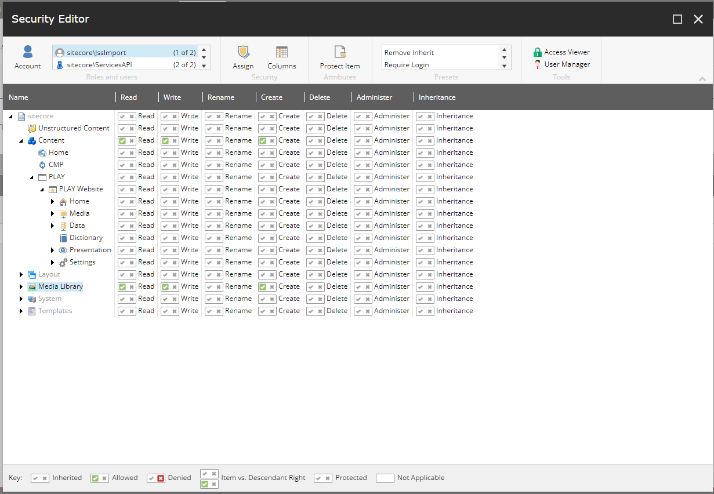
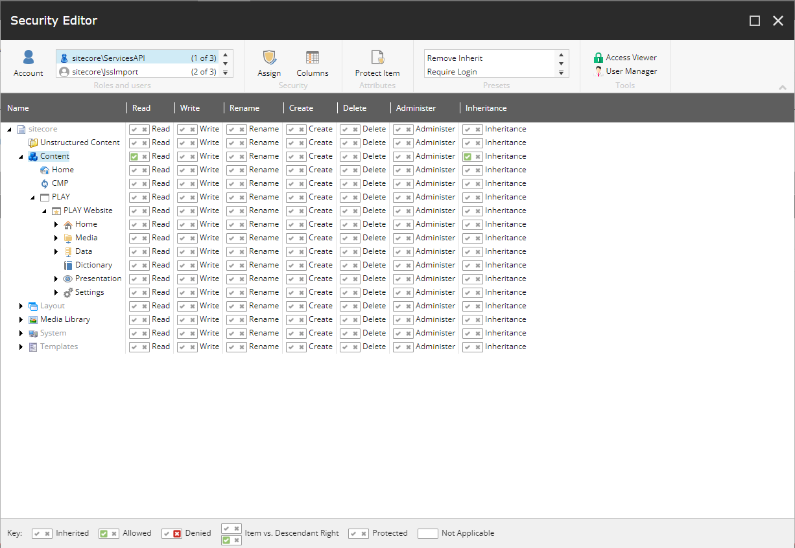

Walkthrough: Connecting a code-first JSS Next.js application to XM Cloud
Connect a JSS Next.js app created with the JSS initializer to XM Cloud and perform an initial deployment of code-first artifacts
Every JSS application must at some point in its lifecycle transition from disconnected mode to being deployed to a XM Cloud environment. You can use the JSS CLI to deploy our app to XM Cloud, which imports all of our disconnected content and components into Items that can then be edited.
After the app is connected to Sitecore, you can run it in connected mode where you develop the app using live data from XM Cloud and advanced editors.
Important
A JSS Next.js app created with a container-based template is already connected to the XM Cloud instance inside the Docker container. The following steps must only be performed for JSS Next.js apps created with the NPM initializer.
Connecting and deploying JSS applications to XM Cloud requires that you have access to an instance with Headless Services, you installed the JSS CLI globally, and you created an API Key.
This walkthrough describes how to:
Configure the site name and hostname for the JSS app.
Enable JSS import in your XM Cloud content management instance.
Set up the connection information.
Deploy the app configuration.
Deploy a JSS Next.js app.
Configure the site name and hostname for the JSS app
Applications created with the JSS app initializer include a site definition in a configuration patch created with the application.
In the root folder of your JSS application, open the file containing the configuration patch /sitecore/config/<AppName>.config and confirm that the hostName attribute matches a host header that the server must respond to. If you are deploying a JSS app that is to become the default site for the XM Cloud installation, you can remove the hostName attribute so that the JSS app responds to any host.
Note
You must provide a top-level domain (TLD) for the development hostname. The browser Microsoft Edge does not resolve hostnames without a TLD. For example, the browser can resolve http://jss.sitecore but not http://sitecore.
The following is a site configuration example for setting the site name and the hostname:
<!-- other attributes removed for brevity -->
<site x:before="site[@name='website']"
hostName="myapp.siteco.re" />When using a local instance, you must map the desired hostname to your local host.
To map a hostname to your localhost in a hosts file entry on Windows:
Open a code editor as an administrator.
In the editor, open the hosts file
C:\Windows\System32\drivers\etc\hosts.Add the mapping. For example:
127.0.0.1 myapp.siteco.re
Save and close the file.
After adding the hostname entry, add it as a binding on your IIS instance as well:
If you plan to deploy multiple JSS applications, you must configure the different hosts and hostname bindings in IIS for XM Cloud to resolve the correct site.
Enable JSS import in your XM Cloud content management instance
Because of technical limitations, the JSS import user in XM Cloud does not have read and write permissions. Before using the Import Service in your XM Cloud content management (CM) instance, you must provide the JSS import user with reading and writing access for the Content and Media Library items.
To enable read and write permissions for the JSS import user:
In the Content Editor, click the /sitecore/Content item.
On the ribbon, on the Configure tab, click Unprotect Item.
On the ribbon, on the Security tab, click User manager.
In the User manager dialog, in the Tools group, click Security editor.
In the Security Editor dialog, in the Roles and users group, click the
sitecore/JssImportuser, and in the content tree, click the Content item.Click for the Create, Read, and Write permissions.
With the
sitecore/JssImportuser selected, click the Media Library item and, in the top menu, click Unprotect to enable permission assignment.Click for the Create, Read, and Write permissions.
In the Security Editor dialog, in the Roles and users group, select the
sitecore/ServicesAPIuser and, in the content tree, click the Content item.Click for the Read and Inheritance permissions.

Set up the connection information
To configure the connection:
In a terminal, run the JSS command
jss setupand follow the prompts to supply the following pieces of information:Website folder - this is the root physical path to the XM Cloud instance, used to deploy config files. File share paths are fine for remote instances. For example:
c:\inetpub\wwwroot\MyXMCloud\Website. If you do not have access to the website folder directly, answer no when asked if your instance is remote.Sitecore hostname - this is the hostname of your JSS app previously configured in the configuration patch
/sitecore/config/<AppName>.config. For example:http://jssreactwebSitecore import service URL - this is the import service URL of your JSS app, by default it сonsists of the hostname of your JSS app plus
/sitecore/api/jss/import:http://jssreactweb/sitecore/api/jss/import. You can leave this blank to use the default value or provide your custom URL.Sitecore API key - provide the Item ID of the API key for this JSS app.
Deployment secret - this is a shared secret that enables authentication to deploy your app items to XM Cloud. We recommend you use the random key generated by the setup process. If you choose your own key, the secret must be a randomly generated string 32 or more characters long.
Important
Do not commit the secret to source control; use a unique secret for each environment and limit access to production secrets. For CI environments,
jss setupparameters (--help) can be used to pass the secret and other parameters from variables. By default, the secret is stored in/scjssconfig.jsonand/sitecore/config/AppName.deploysecret.config- both of which are automatically ignored if you are using Git for source control.
The jss setup process generates the /scjssconfig.json file containing the connection strings for your JSS application.
Tip
To build an environment-agnostic JSS app bundle for production environments that always use the current hostname for API requests, in the scjssconfig.json file set the layoutServiceHost setting to blank. This technique is incompatible with connected GraphQL.
Deploy the app configuration to XM Cloud
The JSS app is registered with XM Cloud using configuration patches that are deployed to the XM Cloud server. When setting up the server, you already edited one of these patches when setting the hostName attribute. Before the configuration patch can take effect on the server, you must deploy it. You can deploy configurations automatically (recommended) or manually.
Automatic deployment deploys the config patches directly from the JSS app using the JSS CLI.
To automatically deploy the configuration patches:
In a terminal, within your JSS app, run the command:
jss deploy config
The script copies the config patch files from the
sitecore/configfolder to the SitecoreApp_Config/Include/zzzfolder.
The automatic configuration deployment configures the JSS app within XM Cloud, creates a site for it, and enables live mode without publishing. We recommend that developers review the patch file carefully to ensure that all the settings are correct for the environment. In production, for example, the application must not run in live mode.
Note
Ensure that the user account you use to run the command has the permissions to write to the website folder configured in /scjssconfig.json. On Windows, this can involve UAC elevation.
If you want to deploy configuration patches manually:
Acquire the
sitecore/config/*.configpatches from the JSS application and review their content.Deploy them to your
App_Config/Includefolder in a location such as azzzfolder.
Deploy a JSS Next.js app to XM Cloud
Applications built with JSS for Next.js are deployed differently than apps built with JSS for React, Angular, and Vue.js because of the particularities of Next.js. Essentially, because of the Next.js server, a JSS Next.js app uses the HTTP rendering engine.
To deploy a JSS Next.js app to a Sitecore installation:
Open a command prompt/terminal within your JSS app.
Run the command:
jss deploy items --includeContent --includeDictionary
Important
Do not use jss deploy app or jss deploy files when working with Next.js.
You do not have to configure a sitecoreDistPath in the package.json file of a Next.js JSS app.